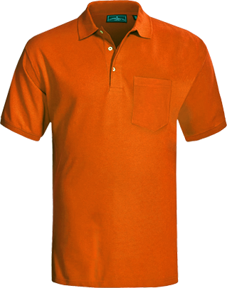
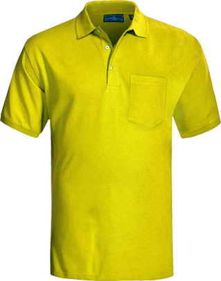
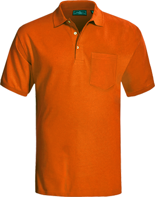
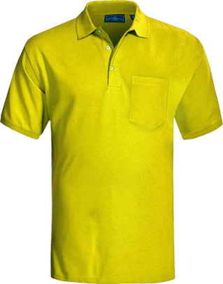

北京兰桑子服装有限公司成立于2003年,位于中国北京市，是一家集生产制作，工艺设计、市场营销为一体化的中高端POLO衫生产企业，公司产品面对商务礼品、员工制服、团体服饰供货商, 主要为政府、公司企业、学校、教会组织等, 提供员工制服及团队服饰设计及订购服务。
订制团体服饰, 不单只是生产服装而已, 最重要是为客户提供整套方案。包括布料的选择、款式的设计、图案的搭配、货期的配合等。我们重视客户的需求, 一直以提供高品质及有效率的服务为宗旨。为此,兰桑子拥有优质管理及质量监控系统, 由订织面料及辅料、样衣制作、印花、绣花、烫画, 到最后的生产工序, 我们都严格监控, 以确保成品规格合乎客户要求, 质量达到优质水平。并且不断引入新式管理及生产技术,务求提升产品质量,
开发更多产品款式, 以及提高质量监控的稳定性。
另外, 我们位于北京的总公司, 亦同时优化报价、落单、货期查询等流程, 确保客户清楚了解收费内容、设计细节、货运详情及其订单的状态。透过资历丰富的销售人员及专业技术, 从面料及辅料采购、生产、包装、物流以致售后服务均能够满足客户所需。确保为客户提供专业的意见, 提升服务的效率和质素。 我们会继续努力, 不断创新求变, 务求做到最好, 力臻完美, 借此机会, 向所有支持和信赖我们的客户,
致以衷心的感谢。
很多人说制衣业是夕阳工业, 没有技术和专业可言。很抱歉, 我们不敢苟同。我们走进了 "制衣" 这个世界, 我们喜欢和尊重祂。人若不喜爱自己的工作, 不尊重自己的行业, 必然无法表现出认真尽责、力求完美的态度。因此, 我们尊重这个行业, 并摮诚地以我们的工作为荣。
我们不是最好, 但我们矢志要做到最好; 我们不知道 "完美" 离我们有多远, 但我们深信, 只要我们不断学习、不断探索、不断接纳意见、不断鞭策自己进步, 我们便可以向着 "完美" 跨前一大步。
我们不厌其烦, 提醒自己认真尽责的处理每一张订单, 不仅是为了赚取盈利, 不仅是为了向客户交代, 而是我们对自己工作的一种尊重, 也是我们对生命态度一种择善而固的执着。
我们努力提供最优质的产品和服务, 并致力成为行业中的领导者。为此, 我们会遵循下列三项原则, 提升服务水平, 从而加强品牌的竞争力。
配合客户需求
我们以客户为出发点。在产品结构、公司运作、订购程序等各方面作出调适, 以配合客户需要。并致力优化服务水平, 改善营运效率, 为客户提供优质产品, 以及方便快捷的服务。
提升技术水平
我们明白客户对服饰的要求与日俱增, 因此, 我们会不断提升生产技术水平, 引入含高技术元素及功能性强的新布种, 并介绍给客户, 使其有更多种选择。藉以加强我们的竞争优势。
严格控制质量
我们明白质量稳定的重要性。为此, 我们会不断加强质量控制流程, 并切实执行, 务求产品符合客户要求, 质量达致优质水平。
我们深信, 无论我们在何地经营业务, 都是当地社会的一份子; 而作为社会的一份子, 我们更坚信取之社会, 定需回馈社会, 在满足商业环境需求的同时, 更要肩负良好企业公民的责任, 并致力为社会的可持续发展贡献一点力量, 务求在社群、商业发展和环境之间取得最好的平衡。
环境保护
我们重视环保, 并以负责任的态度, 力求在日常营运中有效及审慎地运用资源, 减少损耗, 尽量减低业务运作对环境的影响。在日常办公室运作中, 我们也奉行环保政策, 尽量减少纸张的应用, 善用电力及网络等, 务求对环境保护贡献一点力量。
工人权益
我们重视员工的价值。并恪守禁止童工、提供稳定的就业机会、工作时间不应过长等。我们不断致力改善营运效率, 避免接受不合理交货期限和价格太低的订单, 从而避免把营运压力和风险转嫁予生产工人。此外, 我们会严格监察守则的执行情况, 切实履行保障工人权益的责任。
公益活动
我们明白企业公民的责任和义务, 所以我们会提供赞助予不同社会团体。尤其以学生团体、慈善团体和教会。我们会按照实际情况而提供特别的价格优惠。在不同活动(例如慈善机构), 我们更会推出特别优惠予的订购价格。务求商业发展中取得较好的平衡。我们并承诺在能力范围以内, 对社会公益活动, 作出积极的支持和参与。
3D立体标
特点：利落线条、logo表面可以做多种不同变化、不同材质皆可切成立体感效果成品
说明：1、可依照Pantone色号
2、符合环保标准
3、产品效果：雾面、亮面、银色/彩色反光、葱、箔、立体压纹、金属感光泽、荧光
植绒
特点：植绒效果可带有温暖且柔软的感觉，更好的洗涤牢度，弹性一般，有立体的感觉。
说明：可依照Pantone色卡
可与其他效果做结合
不适用于梭织布、防拨水布
建议反面水洗
建议30°C以下低温水洗
果冻
特点：透明的胶状物是一种非常特殊的工艺。给您清晰而有光泽的手感，可以使用在男装，女装，运动服，婴儿穿。
说明：1、可与其他效果做结合
2、不适用于梭织布、防拨水布
3、建议反面水洗
4、建议30°C以下低温水洗
SAM超强抗升华
特点：不需在转印标加黑底即能完全克服布的的升华问题。
说明：1、即使在细小的文字及线条上都能处理
2、能防止水洗污染
3、准大多数布种皆可适用，特别适用于升华转印布
4、手感柔软，弹性佳
5、符合环保标
WP防泼水专用
特点：能有效克服转印标在防泼水布上之牢度问题!
说明：1、良好的水洗牢度
2、不需使用高温来进行压烫
3、轻薄
4、符合环保标准
彩色反光
特点：彩色反光是高反光产品，可以配合不同的材料。主要应用于T/C或针织产品。
说明：1、印花表面有极亮的光泽度
2、不回黏
尺寸领标
特点：可定制您的色彩搭配，多色彩，高弹性，牢固性较适中。
说明：1、可依照Pantone色号
2、网版印刷、多色、细线条
3、适用于大多数布种类型
4、符合环保标准
5、产品效果: 雾面、亮面、葱、金属感光泽、果冻、银色/彩色反光、夜光、荧光、防火
银色反光
特点：反光是一个独特的产品线，它反映了在黑暗的环境中发光。
说明：1、符合环保规范
2、印花表面有极亮的光泽度
3、不回黏
4、洗水牢度佳，可耐60℃洗水
金属箔
特点：箔效果可带有复古感觉，更好的耐水，弹性一般，有9种不同的颜色可供选择。
说明：1、也可做有色箔及彩箔
2、不适用于高弹布种上
3、建议反面水洗
4、建议30°C以下低温水洗

CMYK四色图
特点：广泛用于服装，背包，帽子，配件等，具有良好的弹性，不同的颜色，良好的水洗牢度，利落的线条，遮盖力强等，且适用于高层次的logo。
说明：1、可依照Pantone色号
2、网版印刷、多色、细线条
3、适用于大多数布种类型
4、符合环保标准
5、产品效果: 雾面、亮面、葱、金属感光泽、果冻、银色/彩色反光、夜光、荧光、防火

发泡
特点：是一种水性浆，可用在布匹之自动网版印花，亦可用在裁片之手印花，经加热后发泡的图案
说明：1、加热后，色牢度佳
2、水洗度佳
3、弹性优
4、立体平滑触摸手感
亮面LOGO
特点：印花表面有极亮的光泽度。
说明：1、符合环保规范
2、不回黏
3、洗水牢度佳，可耐60℃洗水，１０次洗程以上
4、弹性佳，适用于莱卡、聚酯、棉、T/C(涤纶与棉)混纺等针织布、一般尼龙(但防水处理过的尼龙布须测试)
模切反光
特点：结合平面印刷及模切技术。可以适用暗色及黑色布块上，图样周围也不会出现明显的边胶。这是解决普遍热转印标与布料结合，会产生明显边胶的最好方案。
说明：1、可依照Pantone色卡
2、良好的水洗牢度
3、高弹性
4、符合环保标准
5、产品效果: 雾面、亮面、银色/彩色反光、葱、夜光、防火

柯 式烫画(热转印技术)是印花层面的一项技术突破, 利用热能, 将图案颜色粒子转移印刷于布料上。 烫画技术克服了传统丝网印花的局限, 在追求图案像真度上取得重大突破, 表现出近乎完美的印花效果。可印制复杂多色、有阴影和渐变效果的图样。 随着柯式烫画技术的进步, 现在的烫画效果, 在透气度、颜色鲜艳度, 以及水洗坚牢度等, 都有着显著的改善。 柯式烫画价格一般比丝印高, 因订单需符合一定的数量要求, 因此适合订单数量较多, 且图案设计较复杂多色的情况下采用。例如举办大型活动时穿着的活动主题POLO衫, 或作为特定产品及品牌的宣传赠品之用。
柯式烫画需要注意的地方:
柯式烫画涉及较昂贵的制作模版费，因此对于较少量的订单, 其单价会相对较高。 图样的尺寸亦会影响单价, 如图样尺寸大, 固定的模板尺寸中所能排版的图样个数较少, 所以成本会较高。 柯式烫画较市面上的普通电脑烫画好, 只有在多次洗水后会产生轻微脱落的现象。这是此类烫画的技术限制, 建议将衣物反转洗, 以及采用较温和的水温, 以减轻此类情况。
12年，我们只做polo衫定制。从面料到辅料，我们精心甄选，追求天然环保，也在不断研发与创新，只为您的亲肤体验
12年，从版型到测量，我们精心考究，苛求自然舒适，并始终注重量身定制，只为您的卓越气质
12年，不忘初心，方得始终
12年，用心定制，品质证言
多种款式任您选
多种颜色任您挑
多种现货任您选
当天出版
三天出样
交货时间短
免费在线设计
优质面料工艺
免费送货上门
交工一条龙省时
严格控制浪费省钱
用心服务让您省心